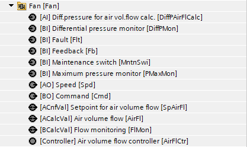
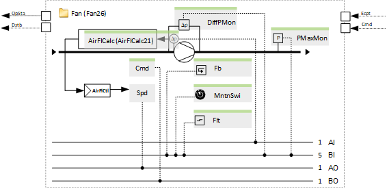
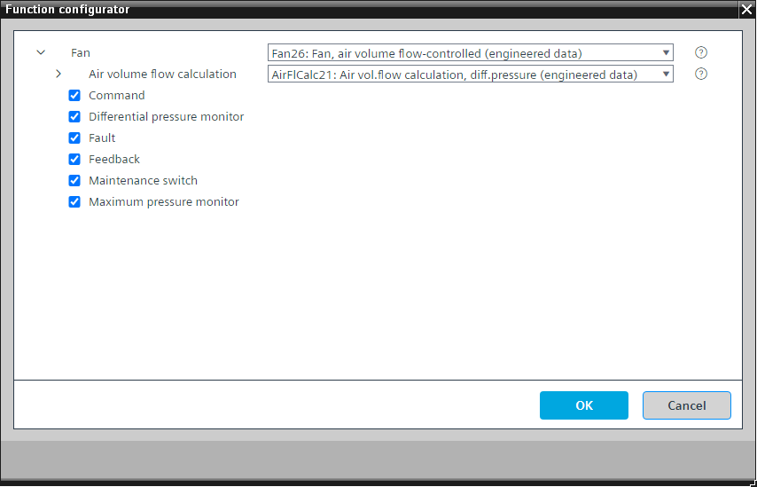

[Fan26] Fan, air volume flow-controlled
Program block, name / node subtype: [Fan26] Fan, air volume flow-controlled
Library hierarchy: Ventilation and air conditioning equipment
Family: Fan
Project tree | Diagram |
|---|---|
|
 |  |
Configurator


Program blocks are stored in the library without I/Os. Use the auto-create and auto-connect functions to create I/Os and/or to connect them to the interface blocks, e.g., R_A, CMD_B. Alternatively, take the I/Os from the folder containing the predefined I/Os in the library and/or from the plant and connect them to the interface blocks.
Function
Controls a variable speed fan and performs air volume flow control.
The air volume flow is measured and calculated in the program block "Air volume flow calculation" (AirFlCalc21).
A minimum speed, e.g., 10 %, is preset with the property "Controller output minimum" of the BACnet object of the controller. The speed can be adjusted.
In the event of smoke extraction, the fan speed is defined by a parameter in the program and is independent of the air volume flow control. Another parameter in the program defines how the fan reacts if an alarm occurs during smoke extraction. This parameter is preset so that alarms from the fan itself do not stop the fan. The only exception is the maintenance switch.
All alarms generated by the following options stop the fan, block its outputs with high priority (priority 5) and shut down the plant.
Optional functions
This program block has the following optional functions:
Option: Command (1xBO)
Enables the variable speed drive.
Some fan control units, e.g., some EC motors, only need an analog signal, e.g., 0-10 V, and do not need a binary output.
Option: Differential pressure monitor (1xBI)
Reads the signal from a differential pressure monitor over the fan and generates an alarm if differential pressure is missing when the fan must run.
Option: Fault (1xBI)
Reads the fault signal from the fan control unit and generates an alarm.
Option: Feedback (1xBI)
Reads the feedback signal, e.g., from a fan control unit, and generates an alarm if feedback is missing when the fan must run.
Option: Maintenance switch (1xBI)
Reads the signal from the maintenance switch and generates an alarm. If active, then the outputs of the fan are stopped with very high priority (priority 2).
Option: Maximum pressure monitor (1xBI)
Reads the signal from a maximum pressure monitor and generates an alarm.
This is a differential pressure switch mounted near the air handler. It prevents damage to the air ducts.
Mandatory elements
Name | Description | Type | Alarm / Notification class | Trend / Type |
|---|---|---|---|---|
|
Spd | Speed | AO: Analog output | No | Yes, 2 |
AirFlCalc | Air volume flow calculation | [AirFlCalc21] Air volume flow calculation, as a function of differential pressure | N/A | N/A |
Optional elements
Name | Description | Type | Alarm / Notification class | Trend / Type |
|---|---|---|---|---|
|
Cmd | Command | BO: Binary output | No | Yes, 4 |
Flt | Fault | BI: Binary input | Yes, 4/5 | No |
MntnSwi | Maintenance switch | BI: Binary input | Yes, 5 | No |
DiffPMon | Differential pressure monitor | BI: Binary input | Yes, 4 | No |
Fb | Feedback | BI: Binary input | Yes, 4 | No |
PMaxMon | Maximum pressure monitor | BI: Binary input | Yes, 4 | No |